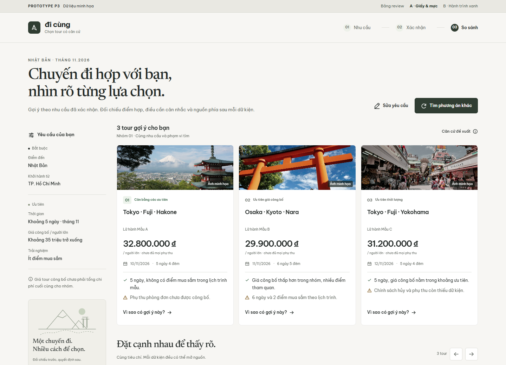
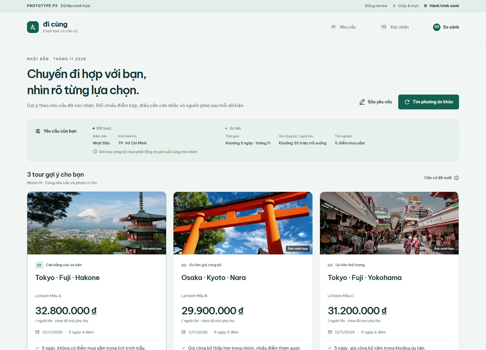

A / 01Giấy & mực
Gọn, ấm và có cảm giác tài liệu được biên tập kỹ. Ưu tiên chữ, dữ kiện và khoảng cách để đọc.
- Nền giấy, chữ serif ở tiêu đề
- Nhu cầu nằm bên cạnh kết quả trên desktop
- Ảnh tiết chế, bảng phẳng và đường kẻ rõ
Chọn hướng giúp bạn đọc, đối chiếu và hiểu lý do dễ nhất.
Cả hai bản dùng cùng dữ liệu minh họa và cùng flow.

A / 01Gọn, ấm và có cảm giác tài liệu được biên tập kỹ. Ưu tiên chữ, dữ kiện và khoảng cách để đọc.

B / 02Sáng, rõ chất du lịch và thân thiện. Ảnh giúp nhận tuyến; màu xanh sâu giữ trọng tâm ở thao tác và dữ kiện.
Giá công bố, thời lượng, mua sắm và chính sách có dễ đối chiếu không?
Mở “Vì sao có gợi ý này?” và bấm một ô trong bảng để xem nguồn.
Chọn Mobile trong khung review; thử cuộn bảng và mở/đóng panel nguồn.
Tham khảo cách tổ chức thông tin; giao diện, icon và bố cục của prototype được tự dựng.
Ngôn ngữ tour, điểm đến và thứ tự ảnh → tên → thông tin.
02 / SO SÁNHApple · Compare ↗Đặt đối tượng và dữ kiện theo cùng hàng để đối chiếu trực tiếp.
03 / GIẢI THÍCHGOV.UK · Details ↗Giữ dữ kiện chính luôn hiện; thông tin bổ sung mở khi cần.
04 / FORMGOV.UK · Text input ↗Nhãn rõ, hint cạnh field và lỗi cụ thể. Tham khảo cho bước nhập/review.
Ảnh điểm đến chỉ minh họa, không xác nhận nội dung tour hoặc dịch vụ.
Ảnh: Unsplash License. Font: Be Vietnam Pro và Newsreader, SIL Open Font License. Icon và ký hiệu “đi cùng” tự vẽ; tên thương hiệu đang là tên tạm.